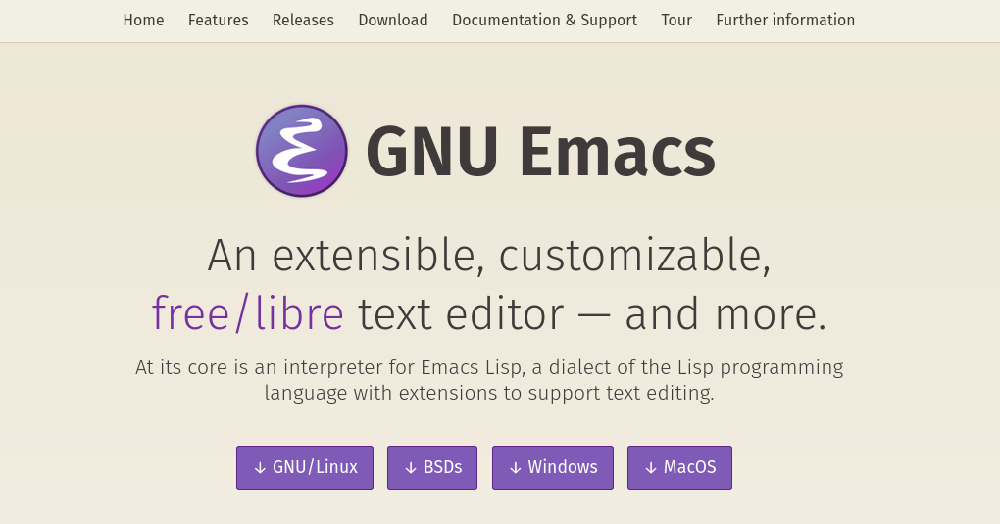
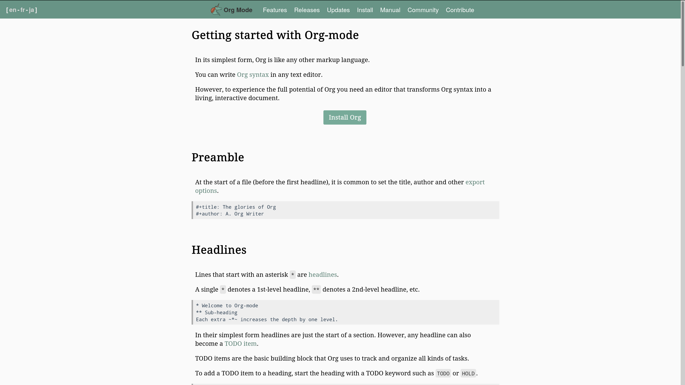

Reproducible research with GNU Emacs and Org-mode
Thibault Lestang
Department of Computer Science,
University of Oxford
Keeping everything consistent
Facilitating research reproducibility
- Clear relationship between data, code and analysis.
Portable and sustainable tools and formats.
Example workflow

From Kieran Healy, The Plain Person's Guide To Plain Text Social Science
GNU Emacs and Org-mode

Or how to bundle software, data and analysis in a single plain text file.
Emacs: used by many, but not widely
- Too old?
- Ugly?
- Not intuitive?
Overall, GNU Emacs has a reputation of being for "experts".
So why Emacs/Org-mode ?
Beyond editing text, GNU Emacs as a work environment:
- Consistent
- Efficient
- Portable
- Sustainable
Particularly suited for open and reproducible research.
Your research in plain text!
* <2020-11-22 Sun>
** First look at the data
Simulations ran all week end
#+begin_src python
import numpy as np
...
#+end_src
The most portable and future-proof format.
Wherever you go, you will find GNU Emacs…

GNU Emacs and Org-mode are free/libre software
- No restriction on use
- Anyone can read/modify the source code
- Anyone can redistribute ("fork") it
Maintained and extended by users, since '85
Give Org-mode a try!
